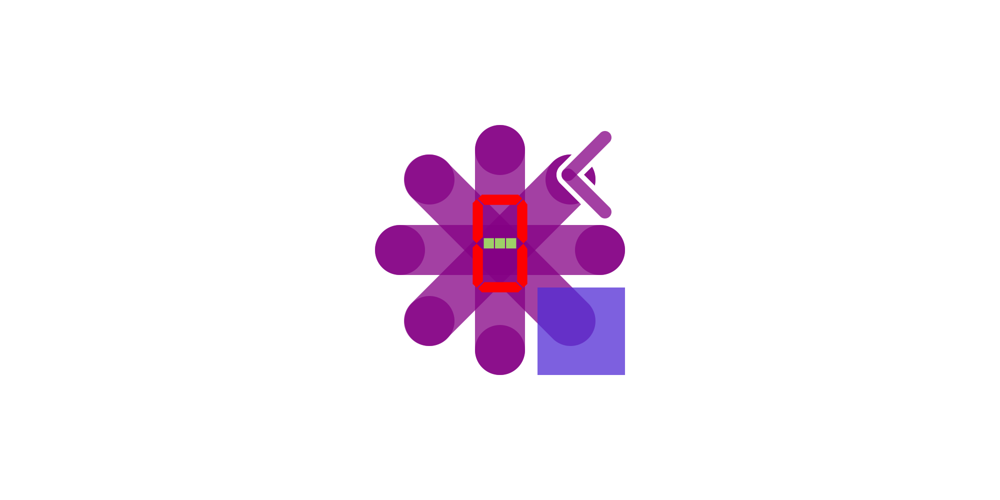

RoguePlanetoid Weekly Update #72
13th October 2024

This week saw me start a new job at Luminous XR as a Full-Stack Developer! It is a great opportunity
to work on their web-based platform as well as get the chance to try out VR and AR experiences from time to time, it is still quite surreal to see people performing tasks in
VR but when you're doing it yourself it is really incredible, it was just my first week but hope to bring my experience as well as the chance to learn more things, and have
always been interested in that sector and pleased it is quite different to some of the sectors I have been in before.
This week was also a chance to work on a new project which was a new Workshop for tutorialr.com for a
Windows Widget, it is a chance to create your very own Countdown Widget, although there's one in Windows now, this one has a
fun look-and-feel using an Emoji to indicate the type of Countdown. It even uses the colour scheme from the Emoji and has the
potential to add more types of Countdown to extend upon the Workshop plus you can pick the Display to use from
either a Seven-Segment Display or Five-by-Seven Dot-Matrix Display. I have enjoyed putting together the Countdown Widget and
the Workshop and look forward to giving others the opportunity to learn how to put together their own Widget for Windows,
you'll be able to see and follow the Workshop for yourself this Workshop Wednesday!
Next week sees the very first event I've every been part of organising, as part of Cluarantonn, on Thursday 17th October
between 7pm and 9pm which is Podcast Paddock where you can saddle up for an evening of podcasting partnerships for new or existing podcasters, small business
owners and freelancers to gallop towards collaboration and growth! The horse related puns are due to the event being held at Haylofts in Newcastle upon Tyne, so if you're
free this Thursday to come along then you can sign up via Eventbrite
and we'll see you there!
RoguePlanetoid Weekly Update #71
7th October 2024
Last week was another busy week but this time working on a brand-new project, a new Workshop for tutorialr.com
which I'll be releasing later this month. It will be great to have a Workshop Wednesday again as has been a couple of years since the last one but won't
hopefully be the last one for as long. This new Workshop will be about building your own Windows 11 Widget, I enjoyed putting together the
example for the Workshop and am hard at work writing it up now! I also released the latest episode of the RoguePlanetoid Podcast about
Microsoft MVP Award where I talk about my journey to become a Microsoft MVP and aspire to inspire others to do the same.
Last week saw updates to Packages including Comentsys.Toolkit which is one of my Toolkits where I added some
helpful methods for managing SVGs including Base-64 support plus updates to Packages for Assets
including Comentsys.Assets.FluentIcons and Comentsys.Assets.FluentIcons.Filled where I added support for a method to get the Path Markup
for the Assets, which will allow them to be used on platforms that support this in XAML such as .NET MAUI and Uno Platform.
I also released a brand-new Packages of Assets which was Comentsys.Assets.Display
which supports a Seven-Segment Display and Five-By-Seven Dot Matrix Display, this and the SVG functionality may form a part of that Workshop!
This week will be one for a change, but it will help to do this and am looking forward to it and will share more about it next RoguePlanetoid Weekly Update,
but it has been great to work on so many different things recently and will continue to do so, even if it takes a bit longer to get there, I know I will but I'm also looking
forward to continue to work on the Workshop I have been developing and some updates to other things I have been doing too, along with other projects too!
Comentsys.Assets.Display 1.0.0 Released
1st October 2024

Today sees the Release of version 1.0.0 of my new Assets package
of Comentsys.Assets.Display for .NET Standard 2.0 on both NuGet and open-source on
GitHub. This Initial Release of this Asset Resource
uses SVG or Scalable Vector Graphics for a Segment or Seven-Segment Display and Matrix or
Five-By-Seven Dot Matrix Display.
It is great to release a brand new Assets package using .NET Standard 2.0 that provides a Display using Segment and Matrix.
This will allow applications using NET Standard to represent values from 0 to 9 along with : and -
plus a Blank or Filled output for a Seven-Segment Display or Five-By-Seven Dot Matrix Display.
Comentsys.Assets.FluentIcons & .Filled 1.1.0 Released
1st October 2024

This week sees the Release of version 1.1.0 of Comentsys.Assets.FluentIcons
on NuGet and open-source on
GitHub with a new Method for GetPathMarkup and
version 1.1.0 of Comentsys.Assets.FluentIcons.Filled on
NuGet and open-source on
GitHub also with a new Method for GetPathMarkup.
These updates to include the Method for GetPathMarkup will help make it easy to use Microsoft Fluent UI System Icons
in platforms using Path Markup Syntax for Path Geometry with XAML such as Windows Presentation Foundation, Win UI and .NET MAUI along with
others like Uno Platform!
Comentsys.Toolkit 1.2.1 Released
1st October 2024

Today sees the Release of version 1.2.0 of my Toolkit of Comentsys.Toolkit for .NET Standard
on both NuGet and open-source on
GitHub. This Release adds more support for Asset Resources
including more methods to help implement third-party Asset Resources from a Stream or String along with Methods
for ToSvgString and ToBase64EncodedSvgString to allow an Asset Resource to be output them as an SVG including with Base-64 Encoding
There was a 1.2.0 version but realised after releasing that GetBase64EncodedString helper Method may cause some confusion so this was updated
so that it would only be visible to anything inheriting AssetBase for any third-party Asset Resources using the Comentsys.Toolkit.
Being able to use Assets more easily was the main aim of this release and they can now be used across all existing Packages for Asset Resources.
RoguePlanetoid Podcast - Episode Twenty One - Microsoft MVP Award
1st October 2024

Today sees the release of Episode Twenty One of the RoguePlanetoid Podcast
about Microsoft MVP Award, Microsoft MVP Award celebrates outstanding community
engagement, advocacy and knowledge sharing of Microsoft's products and services..
You will find the Podcast where you listen to your podcasts such as Spotify,
Amazon Music, RadioPublic, Apple Podcasts, Pandora,
YouTube Music along with YouTube where you can catch up with previous episodes
and Subscribe or Follow so you don't miss any future Episodes.